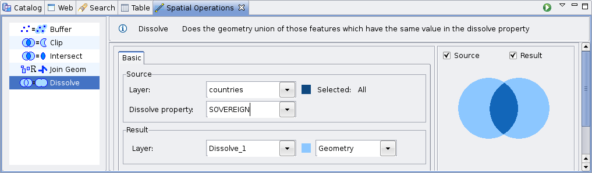

Dissolve Operation¶
Creates a new layer containing the Features grouped and merged by the selected Property.
This operation works with both manually selected Features or all Features that are contained in the selected Layer by default.

Sample Usage¶
Go to the Spatial Operations View, and select Dissolve from the Operation drop down. The Dissolve operation’s specific input options will show up.
Select the Source Layer : On the Layer drop down, select the Layer you want to Dissolve. By default, the currently selected Layer in the Layers View will be chosen for you.
Select the Dissolve Property : On the Dissolve Property drop down, select the Feature’s Property to be used to Dissolve the layer.
Select the Result Layer : On the Result Layer box, select the name of the Layer you want to create containing the Dissolve Operation Result. You will be proposed a default name for that Layer.
Perform the operation : Now you’re ready to go. Press the Perform button from the View’s tool bar and the operation will begin.
The result will be something like this: